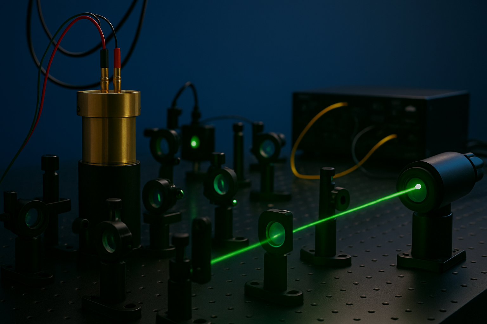

Research Projects

Quantum Sensing (NV, SiC, Doped Organic Crystals)
We develop room-temperature quantum sensors based on NV centers in diamond, silicon-vacancy centers in SiC, and photoexcited triplet states in organic crystals. Our work combines optical spectroscopy, pulsed ODMR, and spin-dynamics control to achieve highly sensitive and robust measurements of magnetic fields, temperature, and pressure. We study defect physics, initialization and readout pathways, spin-relaxation channels, and perform zero-field ODMR where useful for compact instrumentation and on-chip integration.
Applications include nanoscale magnetic resonance, materials characterization, microscale thermometry, and precision metrology. We also explore in situ patterning and engineering of defects (e.g., vacancy creation in SiC) to control density, homogeneity, and coherence times.

Quantum Computing & Simulation (IBM Quantum, NMR QIP)
We design and analyze quantum algorithms with a focus on simulation of nuclear and chemical Hamiltonians, error-aware variational methods, and kernel-based learning. We work both on IBM Quantum backends and a simulation-driven NMR quantum information processor, benchmarking performance under realistic noise and gate constraints. Current efforts include compiling chemistry-inspired circuits, exploring biased-noise regimes, and co-designing control with device-level error models.

Fault-Tolerant Quantum Error Correction
We study surface and color codes, threshold behavior, and resource requirements for near-term architectures. We prototype decoder strategies tailored to biased noise and time-correlated errors and examine syndrome extraction and lifetime scaling under realistic control errors. The goal is practical fault-tolerance recipes that map onto devices available today.

Custom Scientific Instrumentation (RF, FPGA, Control Electronics)
We build our own measurement stacks: RF front-ends, low-noise analog chains, switching networks, and FPGA-based timing/control for multi-channel pulse generation and synchronized readout. Fast iteration lets us push new pulse sequences, duty cycles, and phase-cycling schemes into experiments quickly. We also design compact ODMR heads and modular optics for rapid reconfiguration.

Physics Education Innovation
We incorporate modern sensors, data acquisition, and computation into undergraduate and graduate teaching labs to deepen conceptual understanding. Projects include portable spectroscopy and magnetometry modules, open-source analysis notebooks, and inquiry-based experiments that bridge fundamental concepts with quantum-era instrumentation.

Grants & Active Initiatives
- IUAC (New Delhi): Creation of Silicon Vacancies in Silicon Carbide for Quantum Sensing Applications (Awarded Jan 2025).
- High-density quantum materials & devices: functionalized micro-porous structures and bubble-printed nanodiamond platforms for ODMR imaging and sensing.
- Noise-aware simulation: chemistry and many-body models on IBM Quantum with resource-constrained, bias-aware compilation.
- RF/FPGA platform: scalable pulsed ODMR/NMR control with open-source tooling and reusable hardware modules.